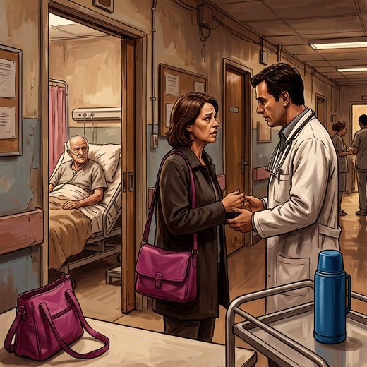

Consulta rápida à beira do leito
Condutas, doses e interações.
Referências da aula · 10
- Baile WF, Buckman R, Lenzi R, Glober G, Beale EA, Kudelka AP. SPIKES—a six-step protocol for delivering bad news: application to the patient with cancer. Oncologist. 2000;5(4):302-11. PMID 10964998. doi:10.1634/theoncologist.5-4-302.PubMedDOI
- Buckman R. Breaking bad news: why is it still so difficult? Br Med J (Clin Res Ed). 1984;288(6430):1597-9. PMID 6426658. doi:10.1136/bmj.288.6430.1597.PubMedDOI
- Back AL, Arnold RM, Baile WF, Tulsky JA, Fryer-Edwards K. Approaching difficult communication tasks in oncology. CA Cancer J Clin. 2005;55(3):164-77. PMID 15890639. doi:10.3322/canjclin.55.3.164.PubMedDOI
- Back AL, Arnold RM, Quill TE. Hope for the best, and prepare for the worst. Ann Intern Med. 2003;138(5):439-43. PMID 12614110. doi:10.7326/0003-4819-138-5-200303040-00028.PubMedDOI
- Childers JW, Back AL, Tulsky JA, Arnold RM. REMAP: a framework for goals of care conversations. J Oncol Pract. 2017;13(10):e844-50. PMID 28445100. doi:10.1200/JOP.2016.018796.PubMedDOI
- Bernacki RE, Block SD; American College of Physicians High Value Care Task Force. Communication about serious illness care goals: a review and synthesis of best practices. JAMA Intern Med. 2014;174(12):1994-2003. PMID 25330167. doi:10.1001/jamainternmed.2014.5271.PubMedDOI
- Lautrette A, Darmon M, Megarbane B, Joly LM, Chevret S, Adrie C, et al. A communication strategy and brochure for relatives of patients dying in the ICU. N Engl J Med. 2007;356(5):469-78. PMID 17267907. doi:10.1056/NEJMoa063446.PubMedDOI
- Haig KM, Sutton S, Whittington J. SBAR: a shared mental model for improving communication between clinicians. Jt Comm J Qual Patient Saf. 2006;32(3):167-75. PMID 16617948. doi:10.1016/s1553-7250(06)32022-3.PubMedDOI
- Conselho Federal de Medicina. Resolução CFM nº 2.217, de 27 de setembro de 2018: Código de Ética Médica. Brasília: CFM; 2018.
- Brasil. Ministério da Saúde. Portaria GM/MS nº 3.681/2024: Política Nacional de Cuidados Paliativos (PNCP). Brasília: MS; 2024.